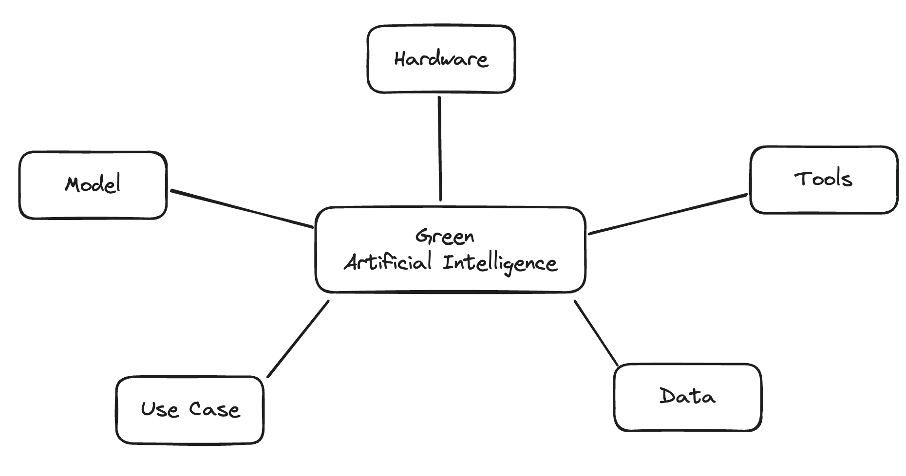

Influence Factors #

Central Question
- What are the influence Factors, and how do they effect the ecological Footprint of AI?
The following section presents impact factors organized into five primary Categories (UseCase. Impact factors in an AI system refer to specific components or areas within the system that can significantly contribute to its environmental impact. These factors can include, but are not limited to, energy consumption of data centers, carbon footprint of hardware production, resource utilization during operation, and the ecological effects of disposing electronic waste.
Use Case #
AI applications are build for specific situations in which the AI is used to achieve particular user goals also known as use case. In this Category we organized impact factors that are related to the problem solution.
An AI-Application has a wide variety of stakeholders. The following is a short list of stakeholder and their potential impact on the environmental impact of AI-Solutions. First the Developers (by developer we mean all technical Stakeholder that have a direkt or indirekt influence on the AI implementation), who can put effort intro the efficiency of the model, implementation, frameworks used etc. Second group of stakeholders are the Execution-Offices, who can influence the overall goal of the AI application and might attach value to the ecological footprint. Lastly the user-group, who can for example prefer AI-Systems with a lower environmental footprint over applications that might be slightly better performing but with a worse footprint. But that require the user to know the environmental impact of the AI-System.
The user experience (UX) of an AI application can significantly influence its environmental impact. For instance, if the application’s interface is unclear, users might accidentally execute resource-intensive inference processes more than once due to misunderstandings. To mitigate this, the design could facilitate user awareness of the environmental consequences of their actions. This could be achieved by providing options to choose between models of varying strengths and ecological footprints. Moreover, enhancing transparency about the expected quality from each model can empower users to make informed decisions that balance performance with sustainability.
The rebound effect refers to a phenomenon where the gains from more efficient ai applications are offset by changes in behavior that increase overall consumption. There are different reasons for that. One could be that increased efficiency leads to increased use. E.g. a Chatbot powered by a LLM has a long response time, and because of that a lot of people don’t use it due to their impatience. Improving the LLMs efficiency might also lead to a faster response time, which therefore lead to increased use of the Chatbot. There are also indirect effects. For example, if AI leads to significant cost savings in one area, a company might invest the saved resources in other areas that also consume energy or resources, such as expanding their data centers or increasing manufacturing.
In certain scenarios, machine learning (ML) methods excel due to the complex and dynamic nature of the problems they address. However, ML might not always be the most efficient choice. For instance, a simple stochastic or deterministic method could solve some problems with less computational overhead, leading to lower energy consumption. This is particularly true in situations where decisions can be reliably made using clear, deterministic rules. For example, assessing eligibility for a loan based on specific financial thresholds might be more efficiently handled by rule-based systems. These systems are not only more straightforward but also offer greater transparency compared to ML models, which can be unnecessarily complex and less interpretable for such tasks. Therefore, the most important question to ask in this context is “Does this problem even need a machine learning solution?”
Model #
The Core of each AI-Application is the AI-Model, which includes the Algorithm, Architecture, as well as the training and inference method.
The first impact factor is the Model Size. Larger AI models generally have more parameters—these are the elements within the model that are adjusted during the learning process. A higher number of parameters means the model must process more data to perform tasks like training, fine-tuning, and inference. This requires more computational resources, which in turn increases the energy needed to run these processes. Furthermore, the larger the model, the longer it typically takes to train. Training involves running large datasets through the model multiple times to optimize the parameters for accurate predictions. This extended training time results in higher energy usage as high-performance computing resources are engaged for longer periods. During inference the model size still has a great impact on its energy-consumption. While the model size contributes to increased energy consumption during inference, strategies such as utilizing sparsely activated models, like Mixture of Experts, can mitigate some of the computational demands. Although these methods help reduce the operational footprint, the overall size—and thus the environmental impact—of the model remains substantial
During training, several decisions impact the AI model’s environmental footprint. Hyperparameter tuning aims to identify optimal parameters that achieve the highest accuracy, but this can increase the footprint. For example, choosing a sigmoid activation function over a simple binary function can lead to higher energy consumption due to the sigmoid’s greater computational intensity. Similarly, selecting the right neural architecture involves a trade-off: more complex architectures might yield better results but demand more energy, whereas simpler architectures require less computing power but might produce slightly inferior outcomes. The architecture selection process itself significantly influences the AI’s footprint, as it often necessitates running training processes with various architectures to predict their performance, thereby increasing energy consumption if these runs are unnecessary. Training a model from scratch can be very energy-intensive. In contrast, methods that leverage pre-trained models, such as transfer learning, usually require less time and resources. This approach often improves performance, especially when data is scarce. For instance, transfer learning involves reusing a model developed for one task as the starting point for another task, reducing energy demands through fewer training iterations. However, the resulting model used for inference might be larger than a model specialized for a specific purpose only. If the model is used for inference extremely frequently, a model trained from scratch, despite its higher initial energy footprint, could ultimately have a smaller overall footprint compared to a model trained using transfer learning. There are several ways to utilize already trained models, such as transfer learning (for example, fine-tuning), using pre-trained embeddings, feature extraction, ensemble methods, and knowledge distillation, among others. Another way to reduce the number of training executions is through multipurpose models, such as Large Language Models (LLMs). These models are costly to train but can handle a variety of tasks with a single model. However, both the initial training and the inference processes of these models might have high energy demands, especially when compared to single purpose models.
After the training phase, the inference process becomes a critical aspect of an AI model’s life cycle, especially in terms of energy consumption. Although the model is no longer learning, each time it is applied to new data to make predictions or analyses, it consumes power. The energy requirement for inference can be influenced by the model’s size; larger models, with their extensive parameters, tend to require more computational power to process data inputs, leading to greater energy use. However, the deployment of techniques such as quantization, which reduces the precision of the model’s parameters, and model pruning, which removes redundant parameters, can effectively decrease the energy demands during inference. These strategies not only streamline the model but also maintain performance efficiency, thus mitigating the environmental impact of operating large AI models on an ongoing basis.
The initial energy consumption of training far exceeds that of a single inference. However, inference typically occurs much more frequently than training. To identify the greatest potential for energy savings, it is necessary to consider various factors such as the use case (e.g., the frequency of model execution), the hardware (e.g., whether the inference is executed on energy-efficient specialized hardware), and other relevant factors. The complexities of these considerations are further discussed in Section 4.
Data #
In AI systems, the data utilized plays a significant role, influencing both the system’s effectiveness and its environmental footprint. The key factors under the “Data” category include Data Size, Data Selection, and Data Collection, each impacting energy consumption differently.
Data Size involves considerations not only about the volume (number of records) but also the type of data (e.g., float32 vs float16). Larger datasets or datasets with higher precision data types (like float32) require more computational power to process. This increases energy usage during model training as more extensive or higher precision datasets necessitate more memory and processing cycles. On the other hand, employing lower precision data types like float16 can reduce the memory footprint and computational load, thus lowering energy consumption. However, this might affect the model’s accuracy and performance.
Selecting data can influences energy usage through the quality of the data chosen for training. Choosing datasets that are representative and well-curated can reduce the need for retraining and additional preprocessing, which can significantly consume energy. A well-selected dataset can minimize the iterations needed to refine the model, thereby conserving energy. Conversely, poor-quality datasets, or data that is irrelevant to the problem the AI model is intended to solve, can lead to excessive computing overhead to process this data.
Data Collection has its complexities, which include deciding between using real-world data and synthetic data, as well as thinking about how often and in how much detail to collect the data. Real-world data is very useful because it is genuine, but collecting it can use a lot of energy, especially if it needs many sensors, frequent updates, and detailed data. Synthetic data, made through simulations, can use less energy and still offer valuable insights, particularly when using real-world data is too expensive or not feasible. However, making high-quality synthetic data can also require a lot of computing power.
Each aspect of data management—from the size and type of the data, through how it’s selected, to the way it’s collected—has profound implications not only for the performance of AI systems but also for their energy consumption and, consequently, their environmental footprint.
Hardware #
In AI applications, the choice and management of hardware play crucial roles in determining both the performance and environmental impact. This discussion delves into various hardware-related factors that influence energy consumption and the overall environmental footprint of AI systems.
The main contributor to the energy demand of the AI system will be the Energy Efficiency of the hardware used, which can vary significantly. There are chips like CPUs that cover a broad application space but have high energy consumption. At the other end of the spectrum, ASICs (Application-Specific Integrated Circuits) are customized for specific uses and are very energy-efficient. Within this range, there are other types of processing units designed for AI use cases, such as TPUs (Tensor Processing Units), NPUs (Neuromorphic Processing Units), GPUs (Graphics Processing Units) and more. Originally designed for computer graphics, GPUs are also highly applicable to AI due to the similarities in the operations needed for both fields.
Besides the energy efficiency of those chips there is another factor, called embodied emissions, that vastly contributes to the overall environmental footprint of AI-Systems. Embodied emissions refer to all the greenhouse gases released throughout the entire lifecycle of the hardware. This includes emissions from the extraction of raw materials, manufacturing, transportation, usage, and disposal. Essentially, it accounts for every stage from the cradle to the grave of a product. Assessing the embodied emissions of computer hardware is challenging due to several factors. Firstly, computer hardware consists of numerous components sourced globally through complex supply chains, making it difficult to accurately track and calculate total emissions. Additionally, there is significant variation in how emissions data is reported—if it is reported at all—due to lack of standardized data and proprietary concerns among manufacturers and suppliers. Diverse manufacturing processes also contribute to differences in the carbon footprints of similar products, as manufacturers may use different production techniques, materials, and energy sources.
Another key factor in the Hardware Category is compute location, which encompasses several aspects. These include the geographical location, the specific server or computer used, and concepts like cloud computing and edge devices. Due to varying energy mixes (proportion of renewable and fossil energy sources) across different regions, the same hardware and software could emit considerably more CO2 in one location than in another. Therefore, selecting a geographical location with a better energy mix could significantly reduce CO2 emissions. Moreover, even within the same region, prioritizing more energy-efficient hardware could lead to lower emissions. This is particularly true if the execution does not need to be immediate and can instead wait for more efficient hardware to become available. Lastly, there is a big debate whether it is more energy efficient either to run AI-Algorithm in the cloud or on edge device and there is no single answere to that. The efficiency of running AI algorithms depends heavily on specific circumstances. These include not only the hardware’s Power Usage Effectiveness (PUE), which may be better in the cloud, but also the additional data transfer to the cloud. This data transfer is unnecessary for edge devices, which can process data right where it is generated. We will discuss this in more detail in Section 4. In-memory computing is another tool that can enhance the efficiency of AI applications. By storing data directly in the RAM instead of slower disk-based storage, in-memory computing allows for faster access and processing of data. This can decrease the time and energy needed for data-intensive tasks like training large AI models, thereby reducing overall power consumption.
Improper hardware settings can also impact the power consumption of AI algorithms. For example, lowering the power limit may increase the overall runtime but reduce the total energy consumption.
In cloud computing, the operation of hardware extends beyond the consumption of electrical energy; it also involves the use of additional resources. Water, for instance, is commonly used in cooling systems. This reliance on water cooling can lead to significant environmental concerns, particularly in regions where fresh water is scarce.
Tools #
In the realm of AI development and deployment, selecting the right tools is crucial for optimizing both performance and environmental impact. This section delves into various tools that can influence the sustainability of AI applications.
AI developers have access to a variety of frameworks that can affect the efficiency and environmental impact of their projects. Popular frameworks such as TensorFlow, PyTorch, and Keras offer different capabilities in terms of ease of use, flexibility, and performance. Each framework also differs in how well it manages resource utilization, which can significantly impact energy consumption during model training and inference.
Adopting practices that enhance energy and resource awareness can substantially decrease the environmental footprint of AI systems. For example, scheduling training sessions during off-peak hours when there is less demand on the power grid can lead to the use of more renewable energy sources and lower carbon emissions. This approach not only optimizes energy usage but also potentially reduces costs.
The methodologies used during the development process, such as Scrum and Agile, can also influence the environmental impact of AI applications. These methodologies promote iterative development, continuous feedback, and adaptability. By enabling more efficient project management and quicker identification of issues, these approaches can minimize wasted effort and resources, thereby reducing the environmental footprint of the development process.
MLOps, or Machine Learning Operations, is a pivotal framework for managing the lifecycle of machine learning models, yet if not implemented carefully, it can exacerbate environmental impacts. By integrating machine learning systems with continuous integration and continuous delivery (CI/CD) pipelines, MLOps automates and streamlines model development, deployment, and maintenance. However, without effective monitoring and management practices, these operations can lead to inefficient use of computing resources and increased energy consumption. The automation of repetitive tasks, while enhancing model deployment precision, can also result in excessive resource use if not properly calibrated. Furthermore, MLOps encourages the adoption of reproducible workflows, which can lead to predictable energy usage patterns; yet, these can become environmentally costly if scalability and resource demands are not accurately anticipated. Improper implementation of MLOps can increase the environmental footprint by mismanaging resource allocation and usage across the machine learning model lifecycle. Particularly, data and concept drift might prompt unnecessary retraining sessions. Scheduling frequent retraining, such as nightly updates despite minimal drift and acceptable model accuracy, can lead to significant and unnecessary energy consumption.